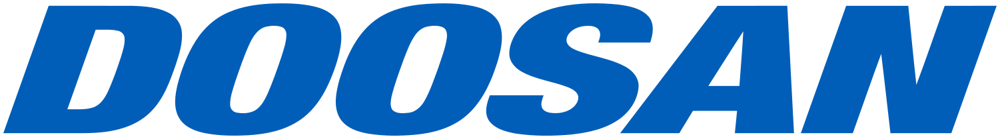
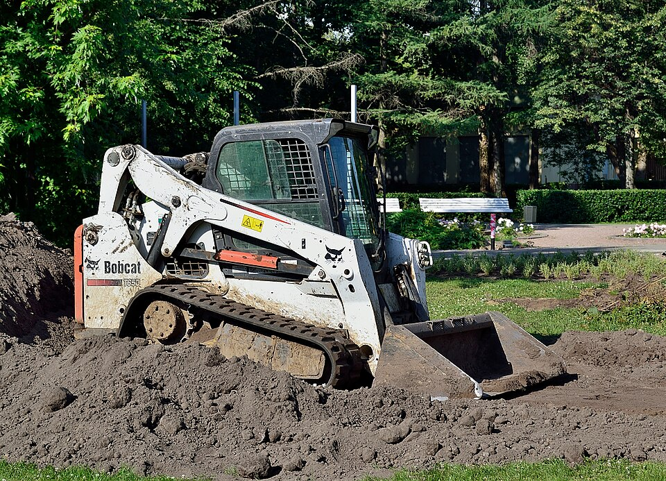

설립연도
1962년

원자력 발전소의 핵심 설비(원자로 등)와 발전용 가스터빈, 풍력 설비를 만드는 회사예요. 2019년 국내 처음으로 발전용 대형 가스터빈을 개발했고, 2025년에는 체코 원전 사업과 미국 가스터빈 수출로 역대 최대 수주를 올렸어요. 건설기계 회사 두산밥캣의 최대주주여서 연결 매출에는 두산밥캣 실적도 들어가요.
칸에 마우스를 올리거나 누르면 자세한 설명을 볼 수 있어요.
원자력 발전소의 심장인 원자로와 증기발생기 같은 대형 설비를 만들어요. 국내 원전뿐 아니라 해외 원전과 미국 회사들의 소형모듈원전(SMR) 설비도 만들어요.
대표 예원자로, 증기발생기, SMR 설비
천연가스로 전기를 만드는 발전용 가스터빈이에요. 2019년 세계 다섯 번째로 개발에 성공했고, 데이터센터 전력 수요가 늘면서 미국 수출도 시작했어요.
대표 예발전용 대형 가스터빈
화력·복합 발전소를 설계부터 건설까지 맡고, 해상풍력 발전기도 만들어요.
대표 예발전소 EPC(설계·조달·건설), 해상풍력

자회사 두산밥캣이 북미에서 1위권인 소형 건설장비(스키드 로더, 소형 굴착기)를 만들어요. 연결 매출에서 큰 비중을 차지해요.
대표 예두산밥캣 소형 로더·굴착기
| 기간 | 매출 | 영업이익 | 순이익 |
|---|
연결 실적이라 자회사 두산밥캣(건설기계)의 매출과 이익이 함께 들어 있어요.
사업마다 겨루는 상대가 달라요